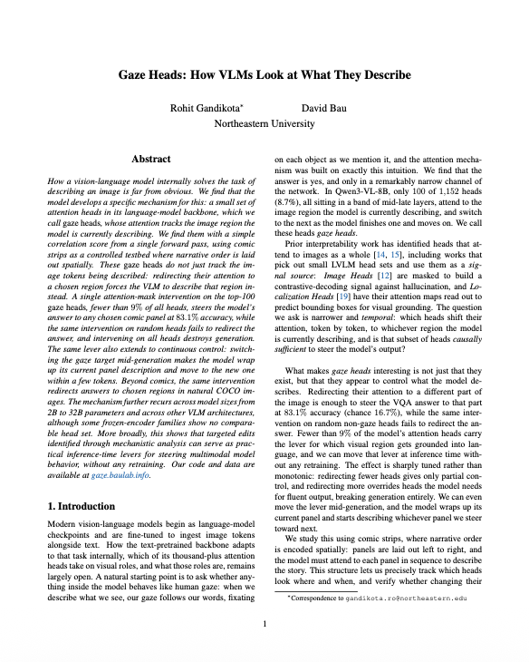 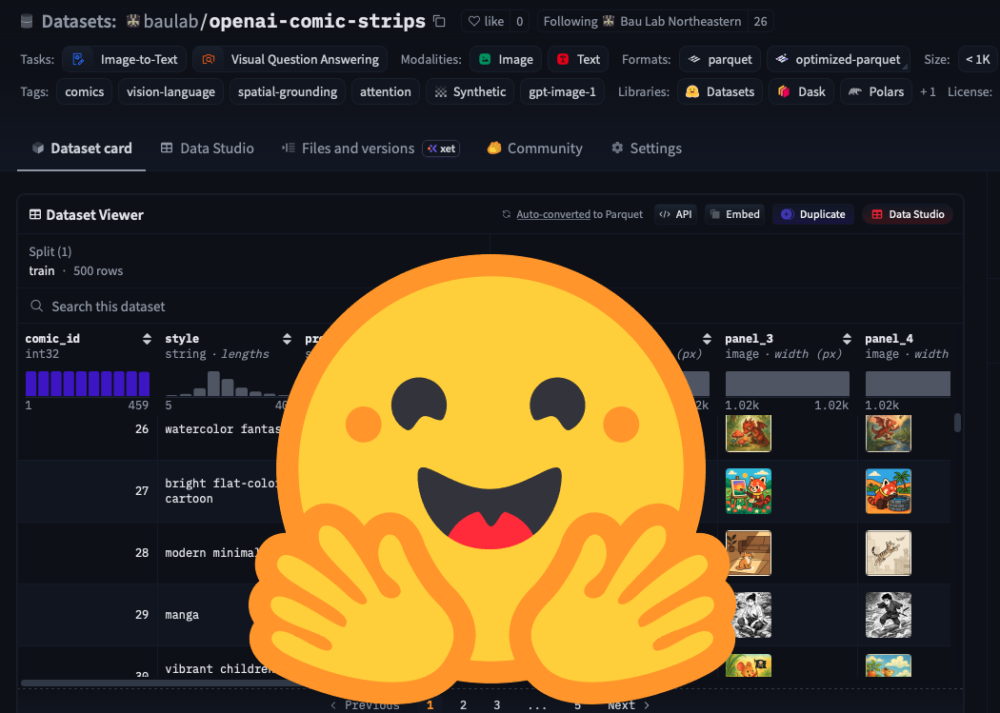 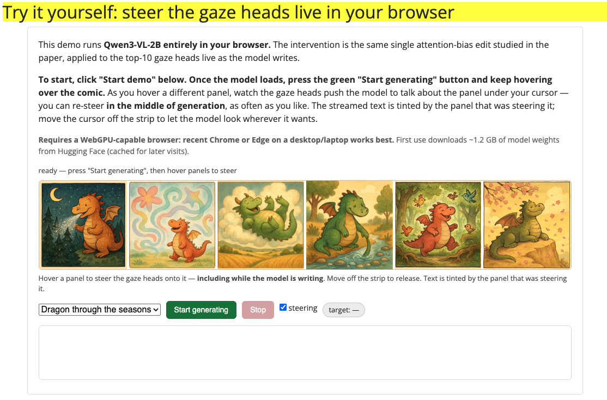
ArXiv
Preprint

Source Code
Github
Comic Strips
Dataset
Interactive
Demo
How does a vision-language model look at what it describes?
When we describe what we see, our gaze follows our words: we fixate on each object as we mention it. Vision-language models (VLMs) describe images fluently, but what happens inside the network as the words move from one part of the image to the next is far from obvious. Does anything inside a VLM behave like gaze?
In this paper, we find that it does, in a remarkably narrow channel of the network. A small set of attention heads, which we call gaze heads, tracks the image region the model is currently describing, and redirecting their attention steers the model to describe any region we choose, with a single attention-mask edit at inference time and no retraining. Fewer than 9% of the model's heads carry this lever, and we find the same mechanism across model sizes and architectures.
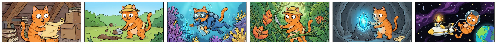
"Read each of the panels and tell me. What is the main action happening in this particular comic panel? Just output the answer in few words."
Baseline (no steering): Cat discovers treasure map
Steered responses when gaze is redirected to:
Panel 1: Cat discovers treasure map.
Panel 2: Cat digs, digs, digs, digs, digs, digs.
Panel 3: Cat explores underwater.
Panel 4: Cat explores jungle.
Panel 5: Cat discovers gem.
Panel 6: Cat explores space.
Try it yourself: steer the gaze heads live in your browser
Below is a single image with a 6-panel layout. It is provided to the model as one single image. When you hover, nothing about the input changes: same image, same prompt, same weights. The only intervention is that 10 attention heads are redirected to look at the panel under your cursor.
To begin:
- Click Start demo (the first load fetches ~1.2 GB of model weights; cached for later visits).
- Hover over any panel and the model starts writing about it. Move your cursor mid-sentence to re-steer it; the streamed text is tinted by the panel steering it.
- Move off the strip to stop.
(Press Generate without steering to see the baseline with no intervention)
Requires a WebGPU-capable browser: recent Chrome or Edge on a desktop/laptop works best. Qwen3-VL-2B runs entirely in your browser; your cursor becomes the model's gaze.
How does a VLM look at an image?
A modern VLM starts life as a language model and is fine-tuned to accept images alongside text. The image is sliced into a grid of small square patches, and each patch becomes one image token that sits in the same sequence as the text tokens. The model routes information between these tokens using attention heads: small units, many per layer, that each decide which other tokens to pull information from at each step of generation. The model we study most, Qwen3-VL-8B, has 1,152 of them.
With over a thousand heads all free to look anywhere, it's not obvious how the model decides which part of the image to ground its words in. To study this, we use comic strips as a controlled testbed. A six-panel strip lays narrative order out spatially: panels go left to right, and the model has to attend to each panel in sequence to describe the story. That gives us unambiguous ground truth for where the model should be looking at every point in its answer, something a free-form photograph cannot give us.
So which of those 1,152 heads move their attention along with the words? And do those heads merely follow the description, or do they control it?
Where in the network does visual reading order live?
Before looking for individual heads, we first ask a coarser question: is the model's notion of "reading order" spread throughout the network, or concentrated somewhere?
Concretely, we overlay each panel with a random letter so the model's answer is a single letter, and run two prompts on the same strip: a normal one asking for the letter on the k-th panel, and one that prepends "Read the comic in reverse". Subtracting the internal activations of the two runs gives us, at every layer, a direction that means "read this strip backwards". We then add that direction back in at one layer at a time during a normal forward pass and watch whether the model's answer flips to the reverse-reading answer.
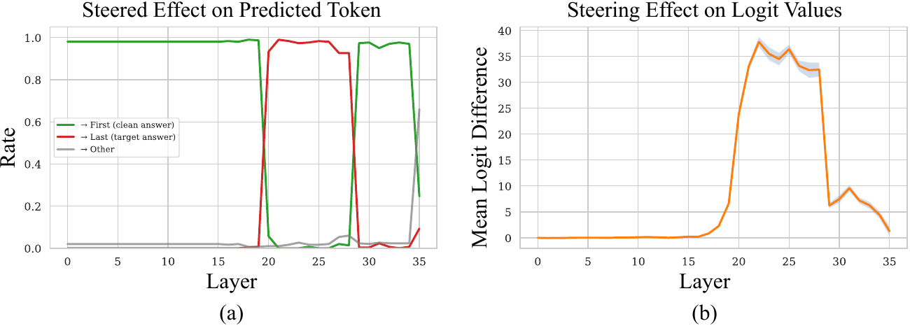
There is a twist that tells us this can't be the whole story. We repeated the same construction for all 720 possible panel orderings, and only reverse produces strong steering. Yet the model has no trouble answering a question about any arbitrary panel. So whatever mechanism handles "look at panel 4" cannot be a single global direction; it must live in something that can re-route flexibly. The natural suspects are the attention heads.
Gaze Score: which heads track the panel being described?
We score every one of the 1,152 heads on a simple property: when the question changes which panel it asks about, does this head's attention move to that panel?
Concretely, we ask the model about each panel in turn ("What is happening in the k-th panel from the left?") and record how much attention each head pays to each panel's image tokens. Across the six questions this gives every head a 6×6 matrix: rows are the queried panel, columns are the attended panel. A head that perfectly tracks the question puts all its mass on the diagonal, and our gaze score is simply the average of that diagonal. Finding gaze heads is cheap: ask about each panel, record which heads shift, sort. No training, no labels, a handful of forward passes.
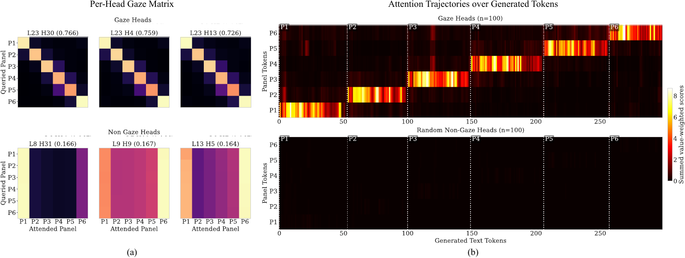
Two things surprised us here. First, the top-scoring heads all concentrate in layers 20–28, exactly the band our reading-order probe found, even though the search ranged over the whole network. Second, the heads we found using controlled questions keep tracking during free generation: prompted to simply describe the strip, their attention sits on panel 1 while the model narrates panel 1, then jumps to panel 2 within a few tokens of the narration moving on. Asked to narrate in reverse, the staircase mirrors.
Can we point the gaze somewhere else?
The staircase shows that gaze heads track what the model describes, but tracking is correlational. The causal question is: if we force these heads to look elsewhere, does the model describe that region instead?
Concretely, we reach into the attention computation of just the top-100 gaze heads, fewer than 9% of the model, and add a bias that boosts their attention onto a chosen target panel's image tokens and suppresses the other panels. Attention to text is left untouched, every other head is left untouched, and no weights change. If the gaze heads are the channel through which a visual region gets grounded into language, the model's answer should follow them to the target panel.
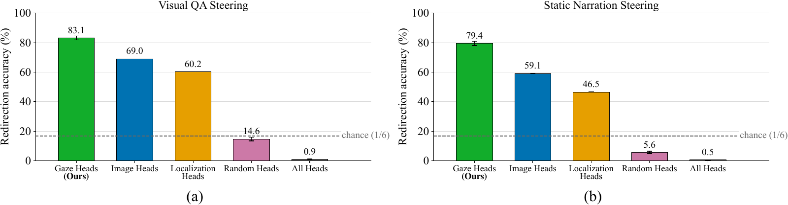
We also ran the identical intervention through two head sets from prior work: Image Heads and Localization Heads, which select heads by how much, or how concentrated, their image attention is in a single pass. Both redirect well above chance but below gaze heads. The difference traces back to what each score measures: the gaze score rewards heads that re-route as the queried region changes, and it is that temporal signal that picks out the heads most worth steering.
Can we move the gaze mid-sentence?
Pointing the gaze heads at one fixed panel steers a whole answer. A stronger test of control is to grab the lever during generation: switch the target panel every 50 tokens, in a scrambled order that never starts at panel 1 and never follows the default left-to-right scan, and see whether the narration follows.
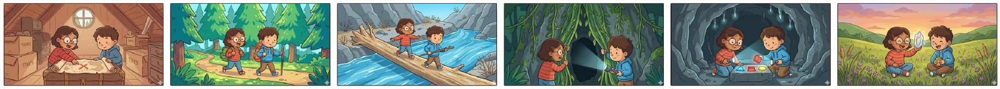
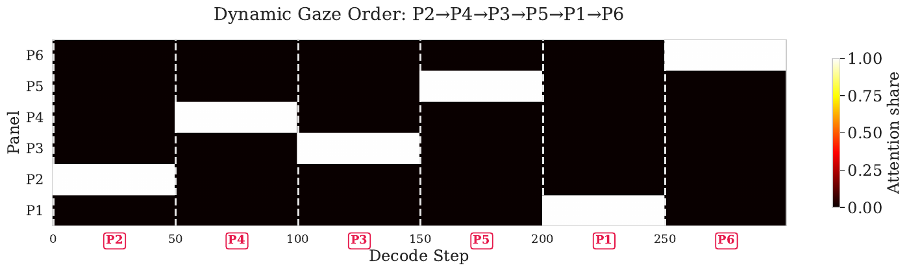
Generated narration under dynamic gaze switching (schedule: P2 → P4 → P3 → P5 → P1 → P6, switching every 50 tokens)
1. Two friends hike through forest, backpacks in tow, exploring nature's wonders. Trees tower as they trek, adventure awaiting beyond the woods' embrace. 2. Forest path winds through lush greenery, friends hike with backpacks and trees. Nature's mystery awaits as they explore, hidden treasures hidden in shadows. 3. Children explore jungle, flashlight illuminates path. Hidden cave looms ahead, mystery beckons as vines dangle, adventure awaits in darkness. 4. Kids discover hidden cave, river flows nearby. Nature's beauty surrounds them, adventure awaits as they cross streams, exploring wild landscapes. 5. Kids cross river, bridge spans rocky path. Nature's beauty surrounds them, adventure awaits as they explore, crossing streams, finding hidden treasures. 6. Kids explore cave, glowing gems shine. Adventure ends as they discover hidden treasures, cave's secrets revealed in glowing light. 7. Kids explore attic, treasure chest awaits. Hidden secrets await, mystery unfolds as they uncover hidden treasures, childhood dreams come alive. 8. Kids explore attic, treasure chest awaits. Hidden secrets await, mystery unfolds as they uncover hidden treasures, childhood dreams come alive. 9. Kids explore field, flowers bloom. Joyful moments unfold, nature's beauty surrounds them, friendship blooms with every step.
Across strips, the order the model actually describes tracks the steering schedule with a Spearman correlation of 0.87 for the gaze heads, while random non-gaze heads come out slightly anti-correlated: with no working lever, the model falls back to its default left-to-right scan, which the scrambled schedule is built to oppose.
How many heads does it take?
Every result so far redirects a fixed set of 100 heads. Is that number special?
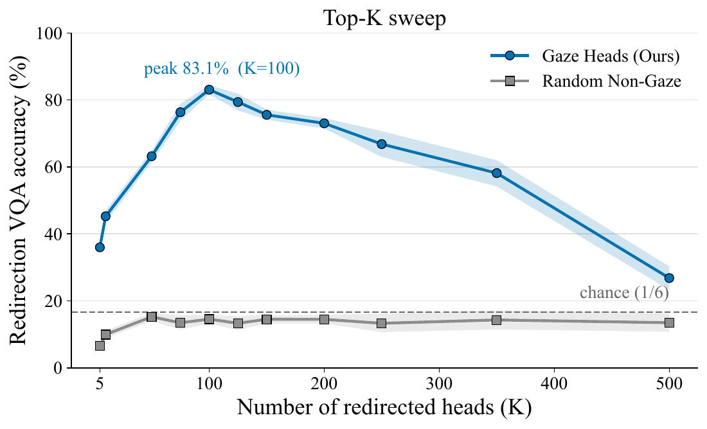
The effect is sharply tuned rather than monotonic. Redirect too few heads and you get only partial control; redirect too many and you trample heads that have nothing to do with gaze, breaking generation entirely. The lever has a size.
Do gaze heads work beyond comics?
Comics gave us clean panel boundaries to discover the heads, but natural images have no panels. Do the same heads still ground attention spatially when no explicit regions exist?
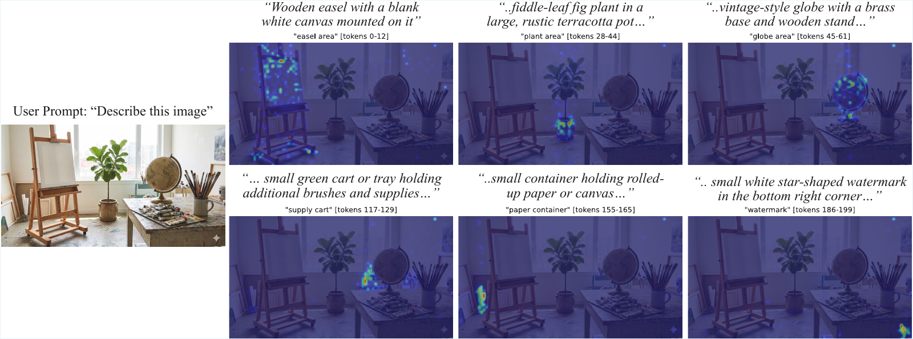
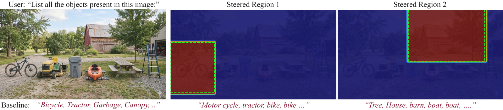
To quantify this, we steered the gaze heads to object bounding boxes on COCO images and asked the model what is in that region: gaze redirection more than doubles the accuracy of the non-gaze control in every object-size class. The intervention is strongest on larger objects, whose boxes cover enough image tokens for the bias to bite, and weakens on small ones.
Is this one model's quirk?
Everything above is one model, Qwen3-VL-8B. We ran the same discovery-and-steering pipeline, unchanged, on four Qwen3-VL sizes from 2B to 32B parameters and on six other VLM families with different vision encoders, tokenizers, and training recipes.
The mechanism recurs. Every Qwen3-VL size yields a steerable gaze head set, and so do Qwen2-VL, Ovis, and InternVL, with peak redirection between 60% and 83% across all of them. But it is not universal: the LLaVA family and Bunny show no comparably steerable head set. One pattern consistent with the split, which we offer as a hypothesis rather than a confirmed cause, is whether the vision encoder is trained together with the language model. All the families where gaze heads work fine-tune their encoder on the VLM task; all the families where they don't keep a frozen encoder behind a thin adapter. Bunny is a particularly suggestive case: it freezes the very same vision backbone that Ovis fine-tunes, and yields 8.3% peak steering accuracy versus Ovis's 68.7%.
Limitations
The frozen-encoder exception is exactly that, an observed pattern rather than an explanation, and confirming why those families lack gaze heads would need controlled training experiments we leave to future work. On natural images the lever weakens for small objects, whose bounding boxes cover too few image tokens for the attention bias to act on. And while we show gaze heads control which region gets described, we have not yet asked whether the same heads mediate other visually grounded behaviors, such as spatial reasoning or hallucination.
For the full experiments, quantitative comparisons against prior head sets, and results across all ten models, see our paper.
How to cite
The paper can be cited as follows.
bibliography
Rohit Gandikota, David Bau. "Gaze Heads: How VLMs Look at What They Describe." arXiv preprint arXiv:2606.14703 (2026).
bibtex
@article{gandikota2026gazeheads,
title={Gaze Heads: How VLMs Look at What They Describe},
author={Rohit Gandikota and David Bau},
journal={arXiv preprint arXiv:2606.14703},
year={2026}
}